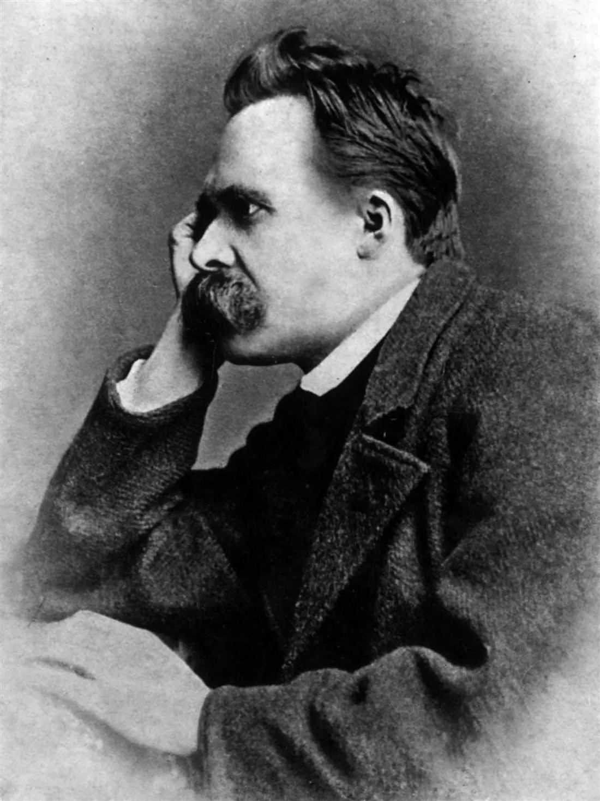
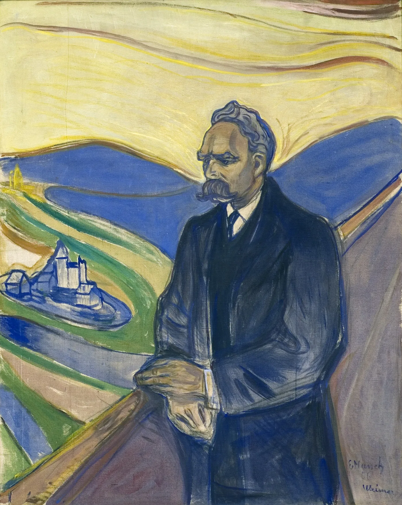
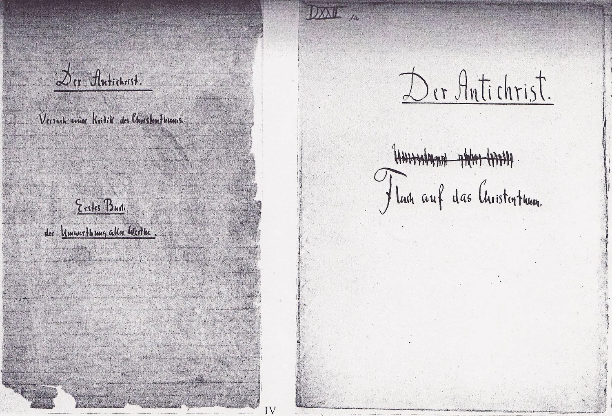

拆毁
追问道德、宗教与真理从何而来。不是简单地否定，而是让“理所当然”重新成为问题。
FRIEDRICH NIETZSCHE · 1844—1900
一场关于破坏、生成与重估的精神旅程
建议佩戴耳机 · 背景声场为本站原创生成音乐

尼采的思想从不提供舒适的精神港湾。它更像一把锤子，敲击那些被视作理所当然的价值，让我们听见内部空洞的回声。
追问道德、宗教与真理从何而来。不是简单地否定，而是让“理所当然”重新成为问题。
把人理解为尚未完成的作品。生命不是等待正确答案，而是持续自我克服与创造。
从生命本身出发，检验一种价值究竟增强力量，还是源于怨恨与自我否定。

EDVARD MUNCHWHY NIETZSCHE NOW?
在信息过载、身份焦虑与价值碎片化的今天，尼采留下的不是一套主义，而是一种姿态：怀疑习以为常的判断，承受没有终审答案的自由，并为自己的选择负责。
阅读思想的余震 ↗A LIFE IN FRAGMENTS 1844—1900
从路肯的牧师之家，到巴塞尔的讲席；从阿尔卑斯山的孤独漫游，到都灵的崩解。尼采的一生，也是他的思想不断脱去旧皮的过程。
RÖCKEN · 路肯
10 月 15 日，弗里德里希·威廉·尼采出生于普鲁士萨克森州的路肯。父亲卡尔·路德维希是一名路德宗牧师。五岁时父亲去世，家庭中的女性成员与宗教氛围深刻塑造了他的早年经验。
BASEL · 巴塞尔
尚在莱比锡大学求学期间，尼采便获得巴塞尔大学古典语文学教席。瓦格纳与叔本华一度构成他精神世界中的两座高峰，但这段亲近关系后来也走向激烈决裂。
BASEL
这部作品以“日神”与“酒神”的张力解释希腊悲剧，把艺术视为对抗生命苦难的形而上活动。它赢得青年读者的热情，却也让古典语文学界质疑他偏离学术规范。
SILS MARIA · 锡尔斯玛利亚
健康恶化使他离开巴塞尔。此后十年，他在意大利、法国南部与瑞士之间寻找气候、孤独和写作的节奏。锡尔斯玛利亚的群山，使“永恒轮回”获得最初的风景。
“六百英尺之外就是深渊，伟大的风景在此展开。”
TURIN · 都灵
1 月 3 日之后，尼采在都灵出现严重精神崩溃。关于他抱住受虐马匹的故事缺少可靠同时代证据，却成为后世不断重述的文化神话。此后，他不再能够持续写作。
WEIMAR · 魏玛
母亲于 1897 年去世后，妹妹伊丽莎白接管照料与档案。尼采于 1900 年 8 月 25 日去世。此后，尼采档案馆使魏玛成为思想记忆、编辑政治与后世争论交叠的地方。
MAPINNER GEOGRAPHY
出生与最初的宗教记忆
讲席、友谊与第一次决裂
群山、永恒轮回与查拉图斯特拉
冬季写作与光的实验
最后的创造力与崩解
档案、编辑与思想的后世
THE WRITTEN EXPLOSIVES 1872—1888
从古典语文学到格言、诗与预言式散文，尼采不断更换写作的声音。以下书目按首次出版时间排列；点击书籍，阅读它的核心问题。
我只有一种风格，
就是没有风格。
METHODTHINKING IN FRAGMENTS
尼采常用格言、箴言、诗与角色独白制造断裂：读者必须自己越过句子之间的空白。这种写作拒绝了体系化的舒适，也让他的文本极易被摘句、误读和武器化。
因此，阅读尼采时不妨保留上下文：谁在说话？他正在反对什么？这个隐喻是否可能反过来吞噬使用者？
A CONSTELLATION OF QUESTIONS NOT A SYSTEM
尼采的“主义”往往并不像标签那样整齐。点击星图上的节点，进入六个彼此牵引、偶尔冲突的思想坐标。
INTERACTIVECLICK A NODE
这不是互不相关的关键词，而是一组持续张开的问号。
ORACLEONE THOUGHT AT A TIME
01 — 08人是一根绳索，系在动物与超人之间——一根悬在深渊上的绳索。
《查拉图斯特拉如是说》
FOUR READING KEYS
区分叙述者、被讽刺的对象与尼采本人的声音。
在他的文本里，健康、疾病、饮食与气候从来不是无关细节。
晚期思想常彼此拉扯。保留矛盾，比制造统一体系更忠实。
遗稿与身后读物经过他人整理，不能都自动等同于定稿。
THE AFTERSHOCK 1900 — NOW
尼采死后，他的语句进入哲学、文学、心理学、音乐与政治。它们曾被误读、篡改、崇拜，也曾帮助人们抵抗顺从。思想的后果从不等于作者的单方面意图。
ARCHIVE
尼采档案馆在魏玛整理、展示并编辑其作品。妹妹伊丽莎白·福斯特-尼采与纳粹政权的联系，使档案史同时成为思想传播史与政治操弄史。

RECEPTION
存在主义、精神分析、结构主义、后结构主义与艺术现代主义都曾与尼采交锋。他既影响了反叛的个人主义，也遭民族主义者与纳粹宣传选择性挪用。
WILL TO POWER
《权力意志》并非尼采生前完成并出版的同名著作。它主要由身后遗稿编排而成，早期版本还带有编辑者的强烈影响。把它当作体系总纲，会遮蔽晚期笔记的试验性质。
RESONANCE
尼采的自我克服不是无限任性。它要求审视欲望、承担后果、承认身体与有限性，并不断拆解自己最不愿怀疑的信念。
THE IMAGE AFTER THE MAN
先知、疯子、纳粹先声、存在主义先驱、后现代鼻祖……每一种面目都放大了一个局部。纪念不意味着封圣，而是继续保留阅读的困难。
AFTER ALLWHAT REMAINS?
价值有其历史、身体与心理来源。追问来源，不等于取消一切判断。
永恒轮回不是宇宙论承诺，也可以被当作检验生活姿态的思想实验。
不是为了胜过所有人，而是让自身的复杂性得到更充分的表达。
SOURCES & IMAGE CREDITS
本站以中文进行编辑性整理，不替代原著与专业研究。人物生平和思想概述参考 Stanford Encyclopedia of Philosophy、Project Gutenberg 及尼采档案馆等公开资料。
图像 1882 年尼采肖像、档案馆室内、手稿题页、尼斯纪念牌及蒙克画作均来自 Wikimedia Commons，分别为 Public Domain 或 CC0；本站使用 WebP 优化副本。
音乐 《都灵夜航》为本站生成的原创 50 秒循环氛围声景，不包含第三方录音。
声明 引语翻译用于展览式呈现，部分采用通行中译并经过编辑；学术引用请核对原著与权威译本。